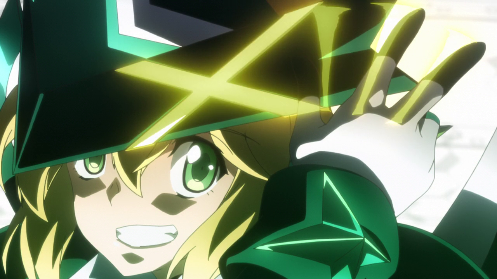

SG-i02'
Igalima
Kirika Akatsuki
El pasado de Kirika antes de convertirse en parte de los Niños Receptores es en gran parte desconocido. Ella es una huérfana que no sabe su propio cumpleaños. Kirika es una chica alegre, a veces infantil y optimista, a menudo vista como entusiasta, especialmente en comparación con Shirabe y Maria. Se preocupa mucho por sus compañeros de equipo y está dispuesta a hacer lo que sea necesario para salvar a la humanidad. Su relación con Shirabe en particular bordea lo romántico, y es extremadamente protectora con ella. Después de llegar a creer falsamente que ella era la reencarnación de Finé, Kirika se desquició cada vez más debido al pánico por la pérdida de su identidad, tiene la costumbre de sostener cosas, como almohadas y otras personas, cuando duerme.